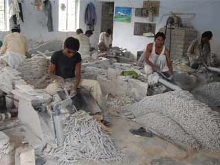

Business profile Mandsaur
Welcome to The City Lord of Pashupatinath
Shri Dhanraju S.
Collector And District Magistrate
Main Producation in Mandsaur

Mandsaur is rich in archaeological and historical heritage But what makes it famous is the temple of Lord Pashupatinath located on the bank of shivna. Its idol has parallel only in Nepal. The most common language is Malvi (Rajasthani and Hindi Mixed).It is also famous famous for large production of Opium around the world. The slate pencil industry is the main industry of the district. t is also believed that this place was once the maternal residence of Mandodari, the wife of Ravana. In old city areas, people worship the idol of Ravana and avoid participating in the 'Ravana Dahan' (burning the idol of Ravana as a symbol of victory of good over evil )ritual on Vijayadashami(Dashahara) as they regard Ravana their son-in-law. A 35-feet ten headed sitting idol of Ravana can be seen in the Khanpura area of the city. (सोंधनी) is a small village at a distance of about 4 km from Mandsaur situated on Mahu-Nimach Highway towards Mahu. Two monolith pillars were erected here by King Yasodharman in 528 AD with inscription which describe his exploits including victory over Hunas (Alchon Huns).[2][3] In a part of the inscription Yasodharman praises himself for having defeated king As of 2001 India census,[15] Mandsaur had a population of 116,483. Males constitute 52% of the population and females 48%. Mandsaur has an average literacy rate of 71%, higher than the national average of 59.5%: male literacy is 78%, and female literacy is 64%. In Mandsaur, 13% of the population is under 6 years of age.Mandsaur District forms the northern projection of Madhya Pradesh from its western Division, i.e., Ujjain Commissioner's Division. It lies between the parallels of latitude 230 45' 50" North and 250 2' 55" North, and between the meridians of longitude 740 42' 30" East and 750 50' 20" East. The District is an average size district of Madhya Pradesh. It extends for about 142 km. from north to south and 124 km. from east to west. The total area is 5521 km² with a population of 116483 in 2001.Mandsaur Fort, also known as Dashpur Fort, is situated in Mandsaur city in Mandsaur district in Madhya Pradesh state of India.[16] The Mandsaur city is situated on the border of Malwa and Mewar and as such is strategically very important. After the attack of Timur, the Delhi Sultanate became weak. In 19th century before India's independence in 1947, Mandsaur was part of the princely state of Gwalior. It gave its name to the treaty with the Holkar Maharaja of Indore, who concluded the Third Anglo-Maratha War and the Pindari War in 1818. Mandsaur or Dashpur Fort Main article: Mandsaur Fort Mandsaur Fort, also known as Dashpur Fort, is situated in Mandsaur city in Mandsaur district in Madhya Pradesh state of India.[16] The Mandsaur city is situated on the border of Malwa and Mewar and as such is strategically very important. After the attack of Timur, the Delhi Sultanate became weak. Dilawar Khan Ghauri was governor of the Malwa province of central India during the decline of the Delhi Sultanat
Business profile Mandsaur